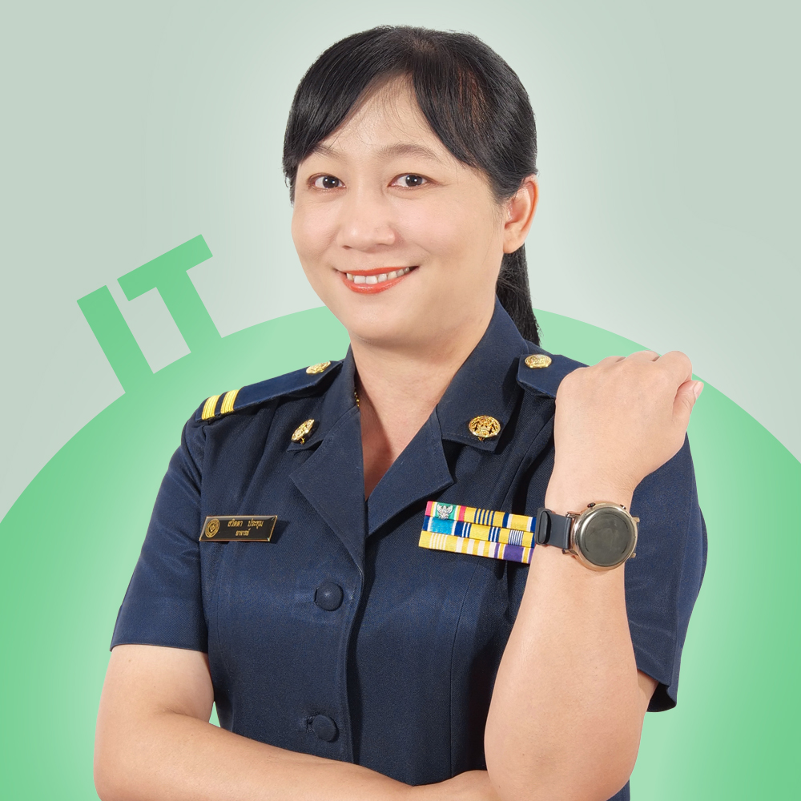

ทีมคณาจารย์
อาจาย์มยุลีย์ พงษ์บุพศิริกุล
หัวหน้าสาขางานเทคโนโลยีสารสนเทศ
อาจารย์ณัฐกานต์ ภิรมณ์
รองหัวหน้าสาขาวิชาเทคโนโลยีสารสนเทศ

อาจารย์สวิตตา ประทุม
ครูเทคโนโลยีสารสนเทศ
อาจารย์ธัญญลักษณ์ กันธะ
ครูเทคโนโลยีสารสนเทศ

อาจารย์ไพศาล ณ ลำปาง
ครูเทคโนโลยีสารสนเทศ
ว่าที่ร้อยตรีเมธาวิณทร์ เมษาเทียนจันทร์
ครูเทคโนโลยีสารสนเทศ
อาจารย์ธัญญรัตน์ มาลา
ครูเทคโนโลยีสารสนเทศ
อาจารย์ณัฐพงษ์ นามคำ
ครูเทคโนโลยีสารสนเทศ